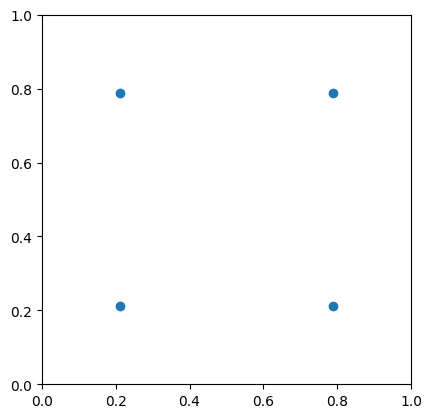
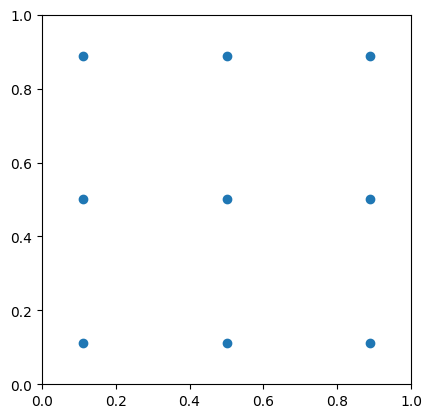
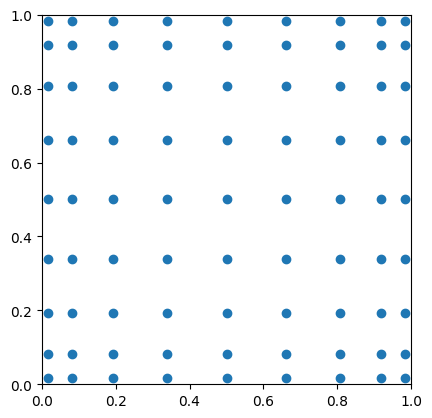
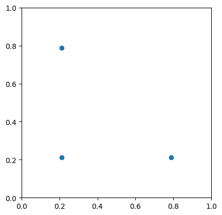
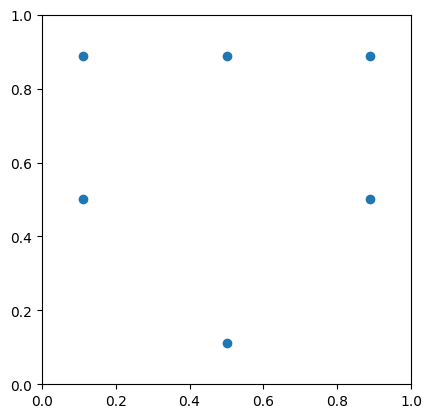
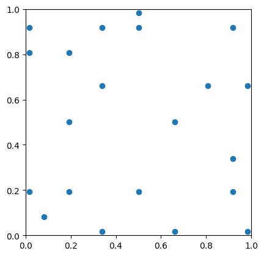
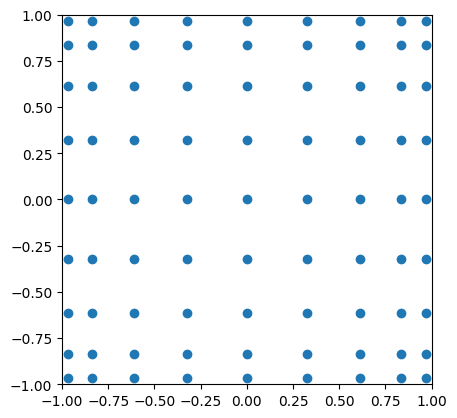
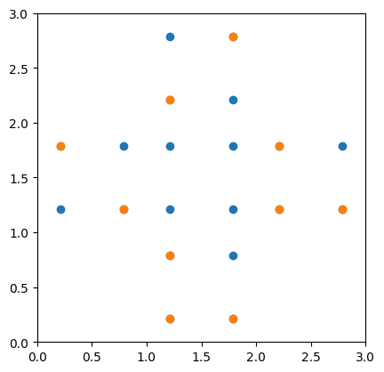
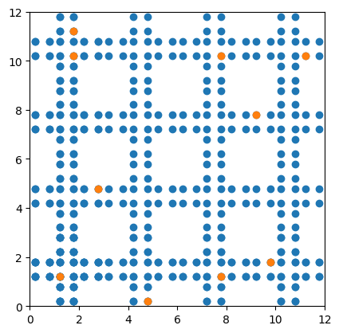
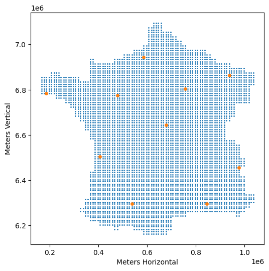

Section 2.3 Applying Recombination
Subsection 2.3.1 Introduction
The
recombine algorithm in baryx takes a weighted point cloud in \(\mathbb{R}^d\) and returns a reweighted set of at most \(d+1\) points with the same barycentre (centre of mass) as the original set. Additional properties of the dataset can be preserved by extending the dimensions of the data to include its moments. For example, sample variance can be preserved by appending \((x_1^2, \ldots, x_d^2)^\top\) to each point \((x_1, \ldots, x_d)^\top\text{.}\) This embeds the data in \(\mathbb{R}^{2d}\text{,}\) after which recombination produces a reweighted set of at most \(2d+1\) points. The first \(d\) components of these points then form a mean- and variance-preserving coreset of the original point cloud.
In the context of numerical integration, recombination compresses quadrature rules by viewing the right-hand side of the momentum equations (2.2.5) as a barycentre preserved under reweighted downsampling. In this work, recombination is not used to construct or extend the degree of precision: the resulting rule can be at most as expressive as the original quadrature rule provided to it.
In this section, we develop a general framework for compressing quadrature rules using recombination and demonstrate its application to two-dimensional quadrature on simple and more complex domains. We derive an upper bound on the number of nodes produced by recombination in terms of the target DoP, and provide an alternative framework which improves this bound for odd DoP on domains invariant under reflection through the origin. Finally, we extend the first result to higher-dimensional domains.
Subsection 2.3.2 General Framework for Recombination on Cubature
Suppose we are given a cubature rule with DoP \(\hat{d}\) on \(\Omega\subset\mathbb{R}^s\text{,}\) with nodes \(\{\mathbf{x}_i\}_{i=1}^N\) and weights \(\{w_i\}_{i=1}^N\text{.}\) The aim is to compress the rule - that is, reduce the number of nodes - while achieving a target DoP \(d\leq\hat{d}\text{.}\)
Let \(\mathbb{P}_s^d\) denote the space of polynomials of degree at most \(d\) on \(\mathbb{R}^s\) . We take \(\{p_1, \ldots, p_M\}\) to be a basis for \(\mathbb{P}_s^d\text{,}\) where
\begin{equation}
\label{eqn:poly-dim}
M = \mathrm{dim}(\mathbb{P}_s^d) = \binom{s + d}{d} .\tag{2.3.1}
\end{equation}
We construct a set of vectors in \(\mathbb{R}^M\) given by
\begin{equation}
\{ \ \left(p_1(\mathbf{x}_i), \ldots, p_M(\mathbf{x}_i)\right)^T: \quad i = 1, \ldots, N \},\tag{2.3.2}
\end{equation}
equipped with the original weights \(\{w_i\}_{i=1}^N\text{.}\)
We then apply recombination to this set, obtaining a coreset of at most \(M+1\) reweighted vectors. This subset preserves the barycentre of the original data. In particular, for each \(j \in \{1, \ldots, M\}\text{,}\)
\begin{equation}
\label{eqn:rec-1}
\sum_{k=1}^{M+1} \tilde{w}_k p_j(\tilde{\mathbf{x}}_k)
= \sum_{i=1}^{N} w_i p_j(\mathbf{x}_i)
= \int_\Omega p_j(\mathbf{x}) \mathrm{d}\mathbf{x},\tag{2.3.3}
\end{equation}
% where \(c_j\) is the where the final equality follows from the definition of the original quadrature rule. Thus, all momentum equations required for DoP \(d\) are satisfied by the new quadrature rule, comprising nodes \(\{\tilde{\mathbf{x}}_i\}_{i=1}^{M+1}\) and weights \(\{\tilde{w}_i\}_{i=1}^{M+1}\text{.}\)
We highlight two caveats for practical implementation. First, in
baryx, the size of the recombined coreset is observed to be \(M\text{,}\) rather than \(M+1\text{.}\) Although the internal procedures of baryx are beyond the scope of this report, this behaviour is motivated by considering (2.3.3) as a linear system of weights with fixed nodes \(\tilde{\mathbf{x}}_k\text{.}\) Moreover, \cite{tchernychova2016caratheodory} shows that Carath\’eodory cubature - the cubature found by recombination - has cardinality (number of nodes) bounded above by \(M\text{.}\)
Second, recombination requires a sufficiently accurate, pre-existing cubature rule to be simplified. Univariate quadrature rules can be extended to higher dimensional rectangular domains through Cartesian products, while retaining their degree of precision \cite{tchernychova2016caratheodory}. In two dimensions, Gaussian cubature can be found for all polygons \cite{sommariva2007product}. This leads us to the approach later employed in experiments: tessellating a more complicated domain with simpler shapes before applying recombination to a patchwork of cubature rules.
Subsection 2.3.3 Square Domains
We begin with the simple case of applying recombination on the domain \([0,1]^2\text{.}\) Figure 2.3.1 shows Gauss-Legendre cubature compressed to a triangular number of nodes, corresponding to the number of momentum equations that must be satisfied. Indeed, from (2.3.1) with \(s=2\text{,}\) the number of nodes produced after recombination is
\begin{equation}
M = \binom{d+2}{d} = (d+1)(d+2)/2,\tag{2.3.4}
\end{equation}
where \(d\) is the target degree of precision.
A closer inspection of Figure 2.3.1 shows that, in this domain, recombined cubature cannot compete with standard Gauss-Legendre cubature. In the middle column, we see that a recombined cubature of degree 2 requires 6 nodes, while the left column shows Gauss-Legendre cubature achieves degree 3 using only four nodes.
In general, a two-dimensional Gauss-Legendre cubature of \(N^2\) nodes has degree of precision \(d = 2N-1\text{.}\) That is, achieving degree of precision \(d\) on \([0,1]^2\) requires only
\begin{equation}
\label{eqn:gauss-eff}
N = \left\lceil \frac{d+1}{2} \right\rceil^2\tag{2.3.5}
\end{equation}
nodes. Thus, \(N\lt M\) for all \(d\in\mathbb{N}\) and there is no guaranteed improvement from recombination.






For odd \(d\text{,}\) certain modifications to our framework can improve the efficiency of the resulting cubature. We consider the domain \([-1,1]^2\text{,}\) which has the advantage that all odd-order polynomials integrate to zero (a property of any domain invariant under reflection through the origin \cite{stroud1971approximate}).
Contrary to our previous framework, we consider a basis \(p_1, ..., p_{M'}\) of only the even-order polynomials of degree \(\leq d\text{.}\) Thus, we have
\begin{equation}
M' = 1 + 3 + 5 + \cdots + \left(2\left\lceil \frac{d-1}{2} \right\rceil + 1\right) = \left\lceil \frac{d+1}{2} \right\rceil^2.\tag{2.3.6}
\end{equation}
The resulting \(M'\) nodes are then reflected through the origin, attributing the same weights to their reflections. We then halve all of the weights. This produces a quadrature rule with
\begin{equation}
M^\dagger = 2\left\lceil \frac{d+1}{2} \right\rceil^2\tag{2.3.7}
\end{equation}
nodes; an example for \(d=5\) is shown in Figure 2.3.3. For odd \(d\text{,}\) this improves upon the original recombined cubature by reducing the node count from \(M\) to \(M^\dagger = M - (d+1)\text{.}\) However, the resulting rule still requires double the nodes as Gauss-Legendre cubature, while the node count for even \(d\) increases to \(M^\dagger = M+(d+1)\text{.}\)
While recombination is uncompetitive on simple rectangular domains, it becomes valuable for complex 2D geometries and high-dimensional hypercubes. These settings are explored in the following two sections.


Subsection 2.3.4 Tessellation and General 2D Domains
We now consider more complex domains in \(\mathbb{R}^2\text{.}\) As noted previously, exact momentum integrals may be unavailable for general domains, so constructing cubature rules directly from momentum equations is often infeasible. Furthermore, tensor-product quadrature rules no longer apply on non-rectangular domains, though Gaussian cubature rules for polygons have been developed \cite{sommariva2007product}.
Our approach is to instead tessellate a domain \(\Omega\) into simpler subdomains, producing a patchwork of local cubature rules. Applying recombination to this patchwork yields a single cubature rule with the same degree of precision and significantly fewer nodes.



To illustrate this approach, we present three examples of increasing geometric complexity, each tessellated using DoP 3 Gauss-Legendre cubature, shown in Figure 2.3.4.
We first consider the “plus” domain introduced previously in Figure 2.2.2. Recombination compresses the resulting \(20\)-node quadrature rule to \(10\) nodes, as predicted by (2.3.1). We then apply the same procedure to a lattice domain inspired by geometries arising in microwave shielding simulations \cite{samoh2021simulation}. Again, recombination reduces the \(320\)-node patchwork cubature to a \(10\)-node rule.
Finally, we tessellate mainland France using subdomains of area \(400\,\mathrm{km}^2\text{.}\) The coastline is approximated by selecting grid cells that intersect the domain. Recombination again produces a degree-\(3\) cubature rule with only \(10\) nodes, this time compressing an initial rule consisting of \(5016\) nodes.
Subsection 2.3.5 Higher Dimensions
For one- and two-dimensional domains, we have seen that recombination fails to compress Gauss-Legendre quadrature on intervals and its Cartesian-product cubature extensions on rectangles. We conclude with the observation that this behaviour does not persist in higher dimensions.
Indeed, on the domain \([0,1]^s\) with target degree of precision \(d\text{,}\) recombination compresses a cubature rule to \(M = \binom{s + d}{d}\) nodes. By contrast, the Cartesian-product extension of Gauss--Legendre quadrature yields a cubature rule with \(N = \left\lceil\frac{d+1}{2}\right\rceil^s\) nodes. For \(s=3\text{,}\) the same behaviour as in the cases \(s=1,2\) persists: Gauss-Legendre cubature is not compressible via recombination, since
\begin{equation}
M = \frac{1}{6}(d+1)(d+2)(d+3) > \left\lceil\frac{d+1}{2}\right\rceil^3 = N.\tag{2.3.8}
\end{equation}
However, for \(s \geq 4\text{,}\) this inequality reverses for sufficiently large \(d\text{.}\) At leading order,
\begin{equation}
N \sim \frac{d^s}{2^s}, \qquad M \sim \frac{d^s}{s!},\tag{2.3.9}
\end{equation}
as \(d\rightarrow\infty\text{,}\) so \(N/M \rightarrow s!/2^s\text{.}\) Since \(s!/2^s \gt 1\) for \(s \geq 4\text{,}\) we have that \(M\lt N\) asymptotically, and recombination can compress Gauss-Legendre cubature on hypercubes in four or more dimensions. In fact, the crossover happens early: for \(s=4\text{,}\) \(M\lt N\) for all even \(d\) and for odd \(d\geq 13\text{,}\) with the crossover occuring at lower \(d\) for higher \(s\text{.}\)